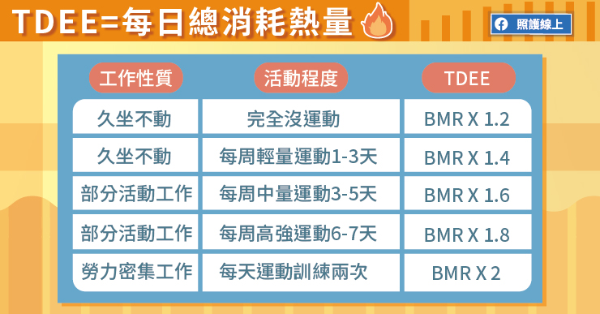

BMR 指的是人體在休息狀態下維持新陳代謝所需的熱量，即使整天躺著不動也會消耗的最低熱量。
BMR 會隨著年齡增加或體重減輕而降低，而隨著肌肉量增加而上升。
1.性別：男性通常比同年齡和體重的女性擁有更少體脂肪和更多肌肉，這會燃燒更多卡路里。
2.身高：身高愈高，基礎代謝率就愈高。
3.體重：體重增加，基礎代謝率也增加。
4.年齡：年齡越大，基礎代謝率就跟著下降。年老後，人們會失去肌肉，身體的重量更多來自於脂肪，而脂肪則減緩卡路里燃燒。
TDEE 是身體一整天下來，包括基礎代謝、活動量、吃東西所消耗的熱量。
不同的生活型態需要的熱量也不一樣，當每天攝取的熱量和 TDEE 相等，便達到「熱量平衡」。
1.基礎代謝率（BMR）：用來維持各組織器官的基礎代謝，佔每日總熱量消耗約60～70％。
2.每日活動量（TEA）：做體能活動（運動、活動）時耗去的能量，佔每日總熱量消耗為20～30％。
3.食物熱效應（TEF）：用來消化食物時耗去的能量，佔每日總熱量消耗的10％。